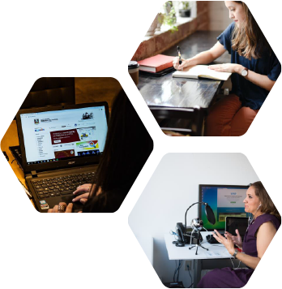

¿Cómo funciona la enseñanza remota?

¿Cómo se sostiene una comunidad de aprendizaje virtualmente?
¿Cómo se comunican docentes y estudiantes?
¿Qué diferencia existe entre las comunicaciones sincrónicas y las asincrónicas?
Estas son algunas de las preguntas fundamentales que todo(a) docente pueden hacerse al momento de considerar una transición del aula presencial al aula virtual.
A continuación analizamos las respuesta a estas preguntas.